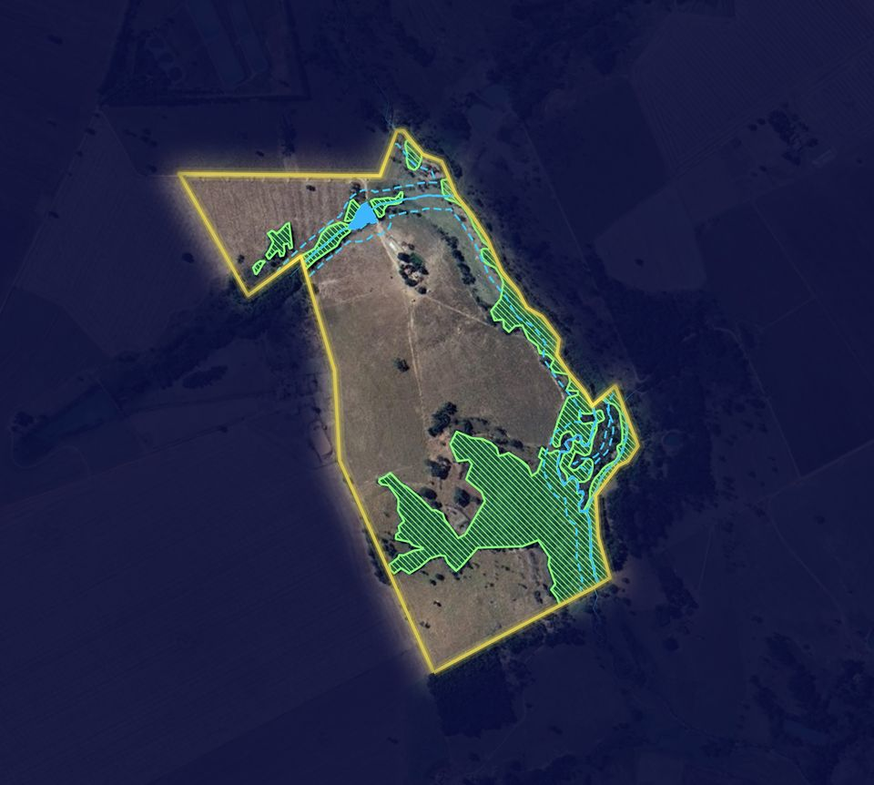
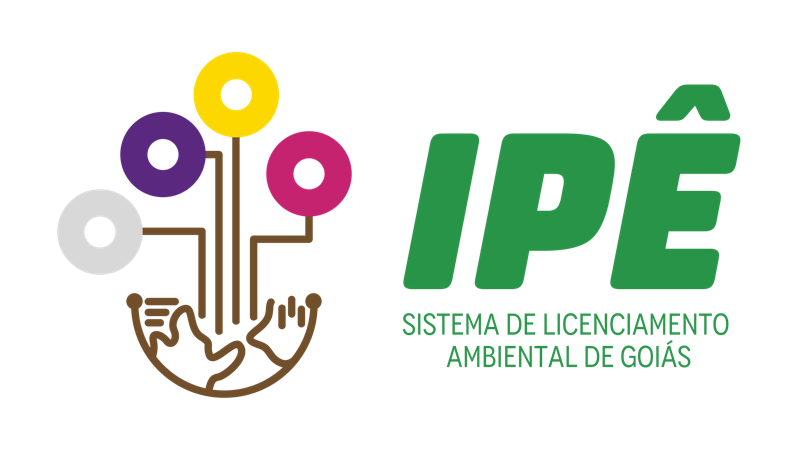
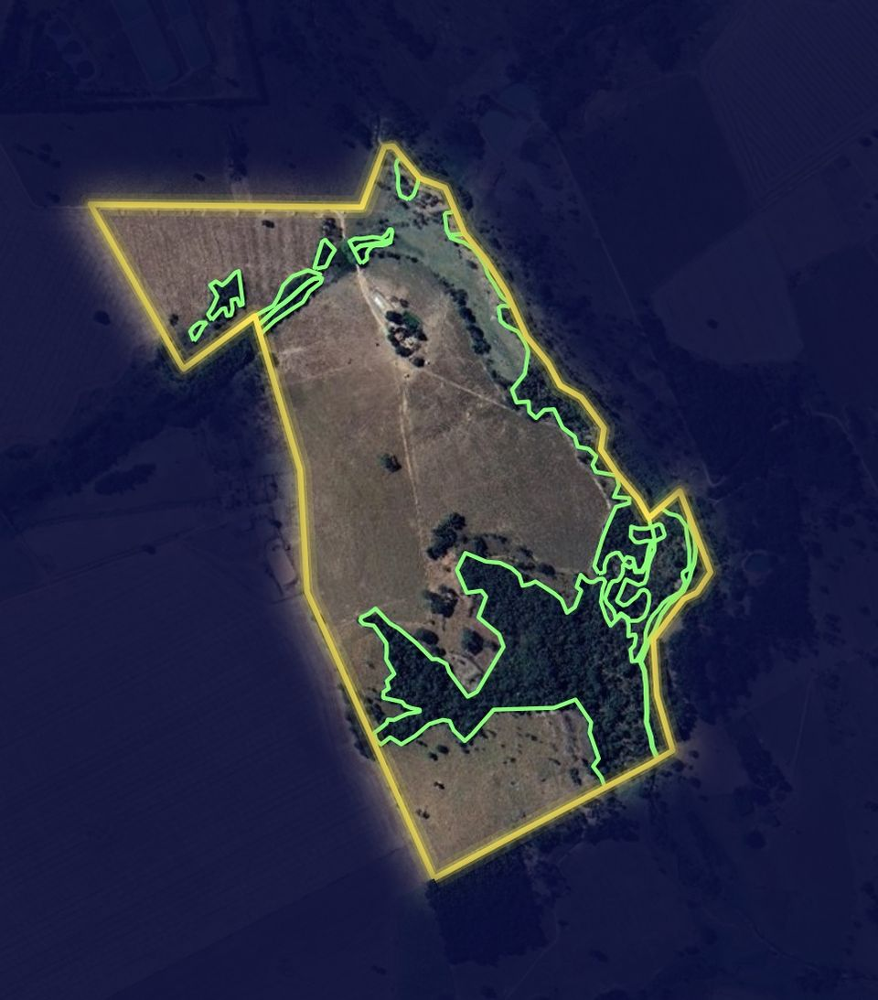
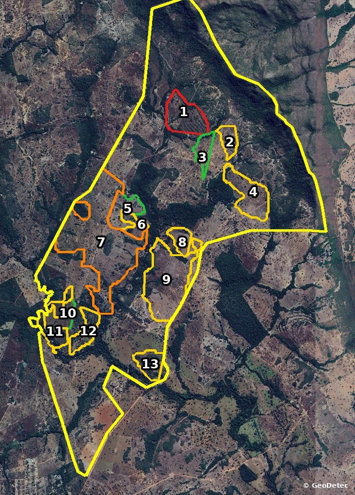

© Google · Maxar/Airbus
Agrimensura, geoprocessamento e meio ambiente · Goiás e Tocantins
Georreferenciamento e projetos ambientais
Levantamento com GNSS RTK e drone, mapas feitos com imagens de satélite e processos ambientais completos, com ART em cada trabalho. Equipe própria e parceria com consultorias e profissionais.
- INCRA/SIGEF
- CAR
- ART/CREA
- NBR 14653-3
O que você precisa?
- Regularizar imóvel ruralSIGEF, RL e APP, REURB, locação
- Licenciar um empreendimentoLicença, DAI, PGRS, MTR, IBAMA
- Passivo ou área contaminadaInvestigação, hidrogeologia, auditoria
- Estudo de fauna ou floraLevantamento, resgate, monitoramento
- Recebi intimação do ITRLaudo de VTN e laudo ambiental
- Laudo PRODES, mapas ou droneSatélite, GNSS, topografia
01Serviços
Nossos serviços
Da base cartográfica à marcação das áreas no campo. Escolha a área e abra o serviço para ver quando é exigido, o que entregamos e quais documentos mandar.
02Agrimensura
Agrimensura e topografia
Medimos, certificamos e marcamos no campo. Levantamento com GNSS RTK e drone, certificação no SIGEF, plantas e memoriais para cartório, INCRA e órgãos ambientais. Atendimento técnico com Breno Ferreira Guimarães.
- Georreferenciamento INCRA/SIGEFLevantamento GNSS RTK e certificação
- Certificação SIGEFArquivos gerados e validados
- Locação de divisasDemarcação com precisão centimétrica
- Retificação de áreaMedidas e confrontações corrigidas
- Desmembramento e remembramentoPeças técnicas para o cartório
- Levantamento planialtimétricoPara projetos, obras e regularização
- Aerofotogrametria com droneOrtofoto 2–5 cm/px, MDT e curvas
- Cadastro territorial e memoriaisCCIR, ITR, REURB e usucapião
- Reserva Legal e APP no campoDemarcação, locação e averbação
- Precisão centimétrica
- GNSS RTK L1/L2/L5
- Ortofoto 2–5 cm/pixel
- Norma Técnica INCRA
03Geoprocessamento
Imagens de satélite e mapas
Baixamos e processamos imagens de vários satélites para montar séries desde os anos 1980, medir mudanças no uso do solo e mostrar o que existia em cada data. O resultado vira mapa, laudo e arquivo pronto para o órgão.
Da escala do estado ao centímetro
- Landsat 5, 7, 8 e 930 m · desde 1984
- Sentinel-210 m · desde 2015
- CBERS-4Aaté 2 m · desde 2019
- Alta resolução comercialaté 0,5 m
- Drone (aerofotogrametria)2 a 5 cm
Quanto maior a barra, mais detalhe. Também usamos MapBiomas (desde 1985), PRODES e DETER (INPE), modelos de elevação ALOS, SRTM e Copernicus, SICAR, SIGEF e bases do IBGE.
O que fazemos com as imagens
- Séries históricas e antes e depois por data
- Uso e cobertura do solo, APP e Reserva Legal
- Índice de vegetação (NDVI) e estabilidade da vegetação
- Polígonos PRODES conferidos um a um
- Georreferenciamento de imagens e plantas antigas
- Cruzamento com SIGEF, CAR e matrícula
Processamento em ArcGIS Pro, com entrega em SHP, KML, GeoTIFF e PDF, em SIRGAS 2000.
Mapas que entregamos
- Mapas de localização e planimétricos
- APP, Reserva Legal e uso do solo
- Série histórica e antes/depois
- Situação de polígonos PRODES por risco
- Estabilidade da vegetação
- Perímetro SIGEF × CAR × matrícula
- SHP, KML e GeoTIFF para ArcGIS e QGIS
- Ortofoto, MDT e curvas de nível
- Planialtimétrico
- Croqui de supressão para fiscalização
- Plantas para EIA/RIMA, PRAD e PCA
- Nascentes, hidrografia e topos de morro
04Malha fiscal do ITR
Recebeu intimação do ITR?
- 1Cruzamento de dados
A Receita compara a DITR com o SIPT, o CAR e outras bases.
- 2Termo de Intimação Fiscal
Abre prazo para comprovar o VTN e as áreas declaradas.
- 3Sem laudo, a conta sobe
O VTN é arbitrado e as áreas são glosadas, com multa e juros (Lei 9.393/1996, art. 14).
Motivos mais comuns
- VTN abaixo do valor de referência
- APP e Reserva Legal sem prova
- Área diferente da matrícula ou do CAR
- Áreas somadas em duplicidade
05Meio ambiente
Licenciamento e regularização ambiental
Cuidamos das obrigações ambientais do imóvel rural e da empresa, do protocolo no Sistema Ipê ao relatório anual do IBAMA.
- Licenciamento ambientalEnquadramento, estudos e protocolo no Sistema Ipê
- DAIPassivos do imóvel declarados com base técnica
- CARTodo Goiás e completo no Tocantins
- Outorga de águaPoço, captação, barramento e lançamento
- PGRS, MTR e DMRResíduos com rastreabilidade no SINIR
- IBAMA: CTF e RAPPCadastro federal e relatório anual
- Áreas contaminadas (GAC)Investigação, risco e remediação
- Passivos ambientaisAntes de comprar, vender ou encerrar
- HidrogeologiaFluxo subterrâneo e poços de monitoramento
- Auditorias e vistoriasNão conformidades e plano de ação
DAI · Goiás
Declaração Ambiental do Imóvel
Criada pela Lei estadual 21.231/2022, a DAI reúne as intervenções e os passivos ambientais do imóvel rural. É feita no Portal Ambiental da SEMAD-GO (Sistema Ipê) e termina em Termo de Compromisso Ambiental, quando há algo a regularizar, ou em Declaração de Inexistência de Passivos. Informação falsa ou omissa é infração, então a declaração precisa de base técnica: imagens de várias datas e conferência no campo.
- 1Imóvel no Ipê
Cadastro ou conferência do imóvel com CAR e matrícula.
- 2Análise de passivos
Imagens de satélite desde antes de 2008 e vistoria, se preciso.
- 3Declaração
Preenchimento técnico e protocolo da DAI.
- 4Resultado
TCA para regularizar, ou Declaração de Inexistência de Passivos.

- Imóvel e empreendimento
- Licenciamento e inexigibilidade
- DAI e acompanhamento dos processos
06Fauna e biologia
Estudos de fauna
Biólogos em campo para levantamento, diagnóstico, resgate e monitoramento de fauna exigidos no licenciamento. Quando o projeto pede, trazemos especialistas parceiros.
07Projetos
Trabalhos realizados
Mapas e fotos recortados, sem nome do imóvel, do cliente ou coordenadas.
Análise multitemporal
Arraste para comparar o mesmo imóvel em 2000 e 2024.

© Google · Maxar/Airbus
Laudo PRODES · 2008 × 2024
Antes e depois do marco do Código Florestal (22/07/2008), polígono por polígono.

© Google · Maxar/Airbus
08Onde atuamos
Todo o estado de Goiás. CAR completo no Tocantins.
Goiás: todo o estado
- Agrimensura, georreferenciamento e topografia
- Licenciamento, DAI e processos no Sistema Ipê
- Fauna, flora, passivos e áreas contaminadas
- Laudos de ITR, VTN e PRODES
Tocantins: CAR completo
- Inscrição, retificação e análise do CAR
- Protocolo e acompanhamento direto no Naturatins
- Levantamento de campo e mapas do imóvel
- Outros serviços sob consulta
09Como trabalhamos
Do campo à assinatura
- Precisão centimétrica
- Conformidade legal
- ART em cada trabalho
- Equipe multidisciplinar
- 01
Vistoria de campo
Levantamento GNSS/RTK, drone, registro fotográfico e campanhas de fauna e flora.
- 02
Geoprocessamento
Processamento dos dados, imagens de satélite e bases oficiais (SIGEF, SICAR, IBGE).
- 03
Análise ambiental
APP, Reserva Legal, vegetação, fauna e enquadramento legal.
- 04
Avaliação
Conferência entre matrícula, CAR e campo; laudos e avaliação do VTN quando aplicável.
- 05
Revisão técnica e ART
Revisão final e assinatura do responsável técnico, com ART.
A assinatura é do responsável técnico. O trabalho é de toda a equipe.
10Equipe
Uma equipe, quatro engenharias e biologia
Profissionais habilitados no CREA e no CRBio. Cada trabalho passa pela revisão de mais de uma área.
11Parcerias
Trabalhamos em parceria
Trabalhamos junto com consultorias e profissionais parceiros e também damos apoio técnico no projeto de quem nos chama.
Somos parceiro técnico de
Fazemos o campo, o geoprocessamento ou a peça técnica completa, com ART. O cliente continua sendo seu.
- Engenheiros agrônomos
- Engenheiros civis
- Arquitetos
- Consultorias ambientais
- Escritórios de projetos
- Imobiliárias rurais
- Advogados e escritórios jurídicos
Trabalhamos em rede com
Quando o trabalho pede outra especialidade, chamamos quem é da área, com a mesma coordenação técnica.
- Outras consultorias ambientais
- Biólogos especialistas por grupo
- Geólogos e hidrogeólogos
- Laboratórios acreditados
- Topógrafos e pilotos de drone
- Assessoria jurídica ambiental
13Dúvidas frequentes
Perguntas frequentes
14Contato
Fale com a gente
Mande o que você precisa e, se puder, a matrícula ou o CAR do imóvel. Respondemos pelo WhatsApp.
Breno Ferreira Guimarães
Atendimento técnico e parcerias
- geodetecgyn@gmail.com
- Todo o estado de Goiás · Tocantins